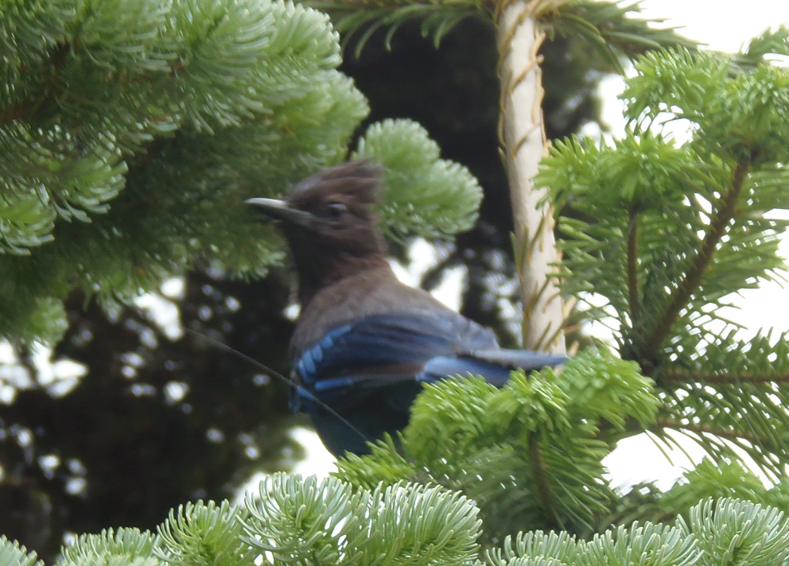
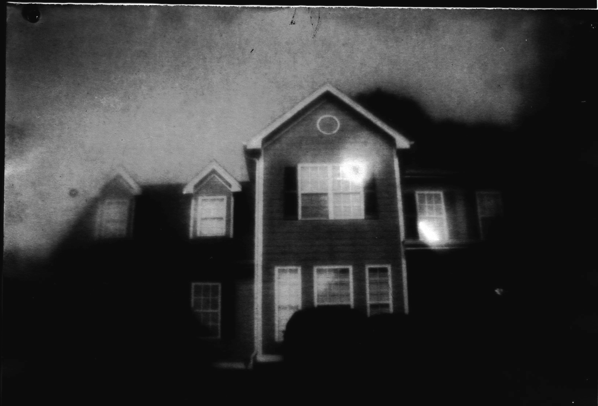

things that i do
this is sorta just a collection of both computer things and not computer things i've done to get to better understand the sorts of shenanigans i get into
| digital things |
i'm a computer science major after all . . . |

|
|
| irl things |
to be honest, this stuff is more interesting |
 |
 |